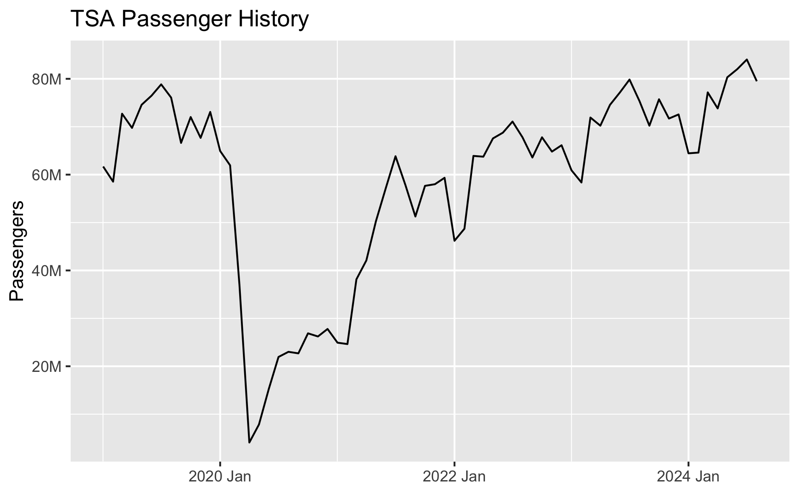
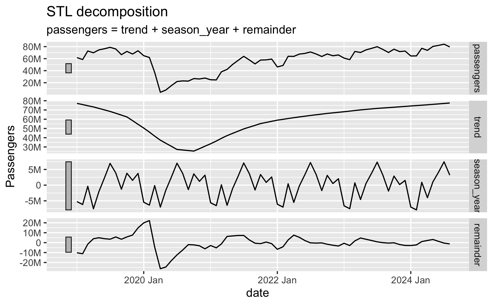

2024-09-27
If we want to create a forecast in R for the TSA Passenger data to predict passenger volumes in the future, we can use the tidyverts packages `fable`, `tsibble`, and `feasts`.
These packages apply tidy data principles to time series data and forecasting. They were coauthored by the forecasting great Rob Hyndman, and his fantastic textbook Forecasting: Principles and Practice (3rd Edition) uses these packages and workflows.
The historical TSA Passenger data that we have looks like this:
There is clear seasonality throughout history, and there has been an upward trend coming out of the Covid downturn.
The fable package provides several time series models to choose from. We can evaluate which perform the best by breaking out data into separate train/test sets.